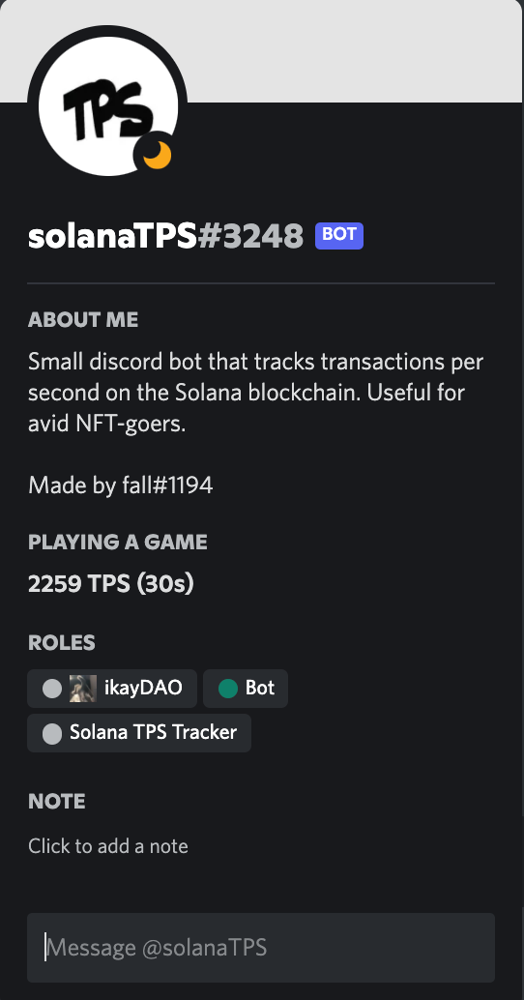
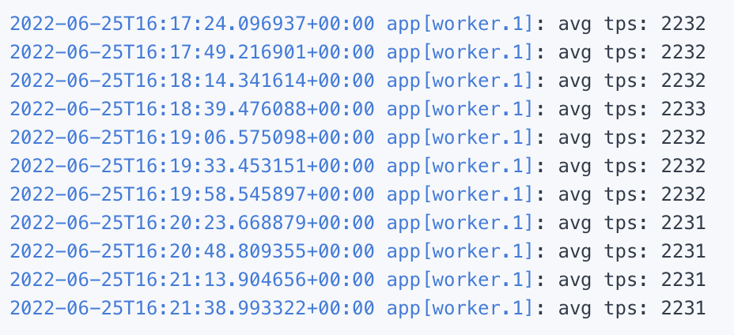

I'm Dani.
Aspiring Software Engineer
I am a London based student delving into the world of tech.
What I have done
PetFriends!
This was a small web application built to connect pet owners with pet minders, providing pets with with care while the owner may not be able to provide. Built with a group of 5.
Github
Discord.js Solana TPS Tracker
As a hobby I do NFTs, to help the community, which is active mostly on Discord. I decided to make a discord bot that calculates the average transactions per second (TPS) of the most recent block on the Solana Blockchain, the chain I trade NFTs on. This bot is publicly available by a given discord link. It is currently being used by servers with 1k+ people.
 The picture on the left shows it is working by its status showing the TPS, the picture on the right is the logs of the bot; displaying the current TPS.
Github Bot Link